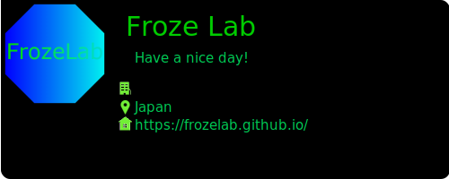

プロジェクト一覧です。
開発してんのかしてないのかよくわからないOS現在はLegacy BIOS向けにOSを開発しているが、
UEFIに対応して、オールアセンブラ（笑）を断念する方針だ。
GIthub
プログラミング言語のグローバル化と教育目的の利用を考慮して開発されたプログラミング言語。
絵文字を使用してプログラミングすることにより、言語の壁を解決しようと言うプロジェクト。
GIthub

Githubの自己紹介readmeに貼り付ける自己紹介カードのようなもの。
コマンドプロンプト(ターミナル)を意識して作った。OSSである。
GIthub